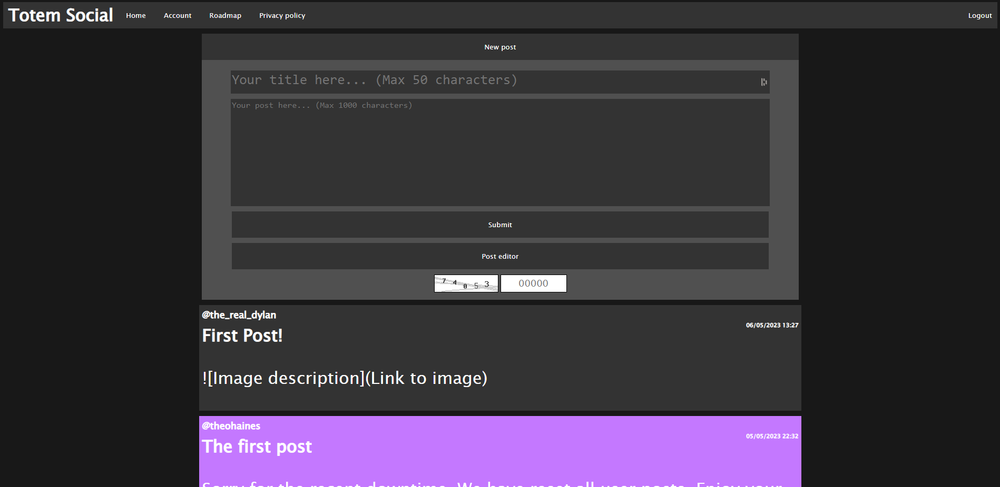
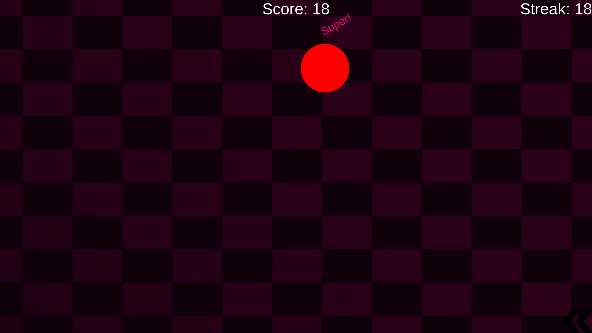
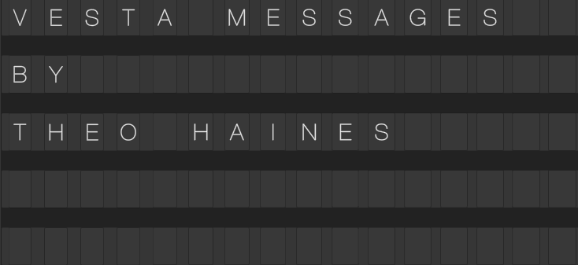
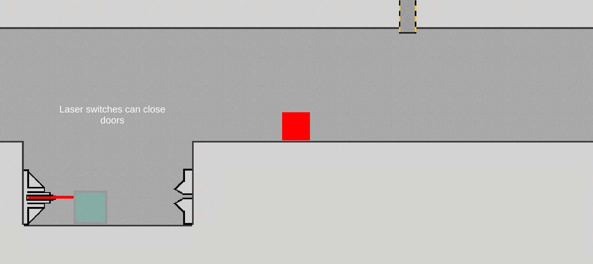
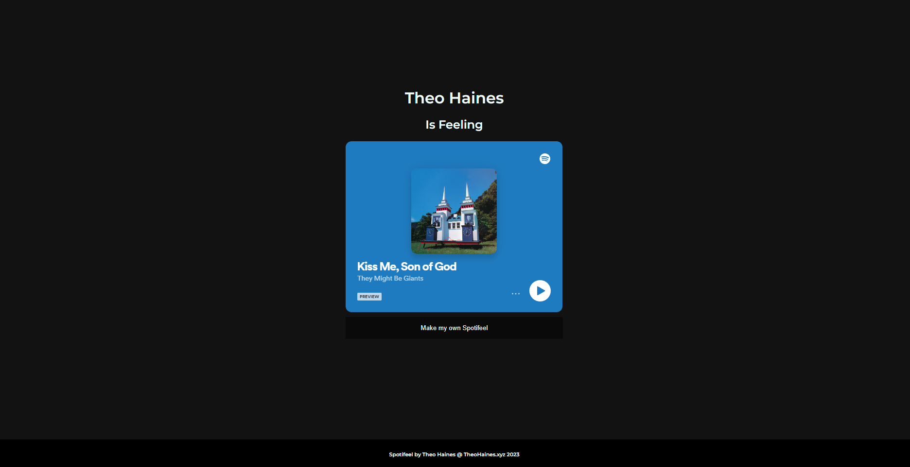

Projects

| TotemSocial |
TotemSocial is a small social media site that mostly people from my college use, It has several features such as text and image posts and markdown editing, you can
access the site here.
| Balls |
Balls is one of the first unity games I published, it features an online leaderboard and customisation. For my first project
I'm very happy with how it turned out. You can play the game for free here.


| Vesta Messages |
VestaMessages was the second ever public project I released. It was a software I made to emulate the design of the vestaboard, I wanted a way to share vestaboard style
messages with my friends and so I created the solution. You can access it for free here.
| 2D puzzle platformer |
The 2D puzzle platformer was a game I made last year, I wanted to design an interesting puzzle game within a week and so I designed this. I originally planned to update
it with more content but I started work on other projects to I never finished new levels. You can access the game free here.


| Spotifeel |
Spotifeel is an online tool that allows users to display their feelings as a spotify song, I made this tool because I found that I best express myself and my
feelings through music so I wanted to make an outlet to do that. You can access Spotifeel for free here.